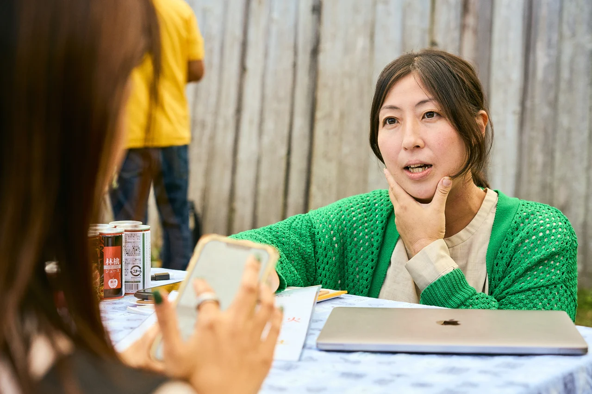
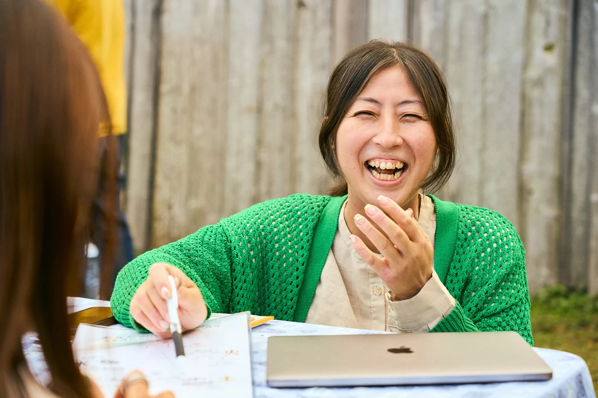
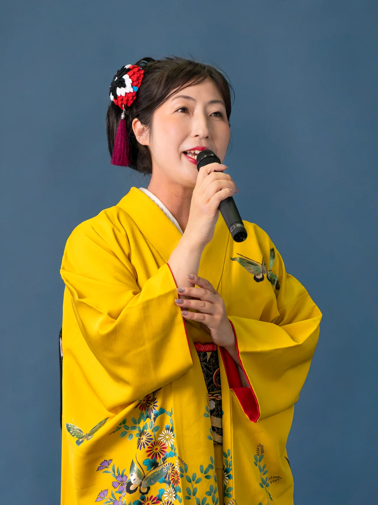
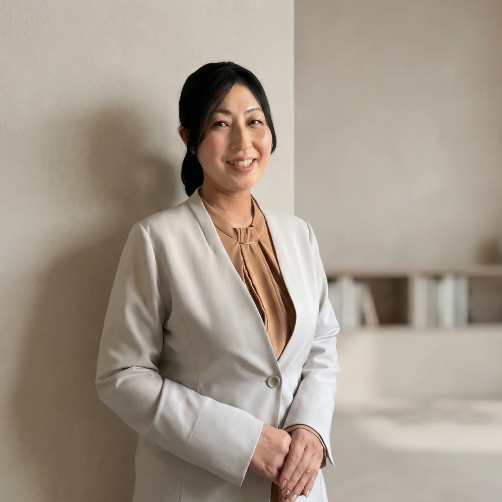

行動と、その人がいる環境を見る
応用行動分析
行動が起きる状況や環境、その人が困っていること、動きやすくなる条件を見る視点。大学・大学院で学び、発達支援や特別支援教育でも使ってきました。
この視点について詳しく読む
目の前に見えている行動だけでなく、
その行動が、どんな状況で起きているのか。
その人は何に困っているのか。
何があると動きやすくなるのか。
大学・大学院で学び、
発達支援や特別支援教育の現場でも使ってきた視点です。

自分と人を理解し、その先の関わり方を。さっちゃんの公式Home
自分のこと。
家族のこと。
目の前にいる誰かのこと。
同じ出来事の中にいても、
見えているものや、大切にしていることは人それぞれです。
人を見るいくつかの視点から、
自分と人を理解し、
その先の関わり方を一緒に考えています。
公認心理師 さっちゃん
自分に合う入口を見つける01 ── 大切にしていること
同じ出来事が起きても、見えているものや、大切にしていることは人それぞれです。
「どうして分かってくれないんだろう」と思うとき、自分が何を「当たり前」だと思っていたのかが見えてくることもあります。
人を理解することは、相手に合わせ続けることでも、すべてを受け入れることでもありません。違いを知ったうえで、私はどうしたいのか。この人と、どう関わりたいのか。そこまで考えることを、大切にしています。
02 ── 私について

子どもの頃、家族に理解してほしいと思っていた私。高校時代、友人の言葉をきっかけに、「私は、目の前にいる人を大切にしていただろうか」と、初めて自分を振り返りました。
大学・大学院で学んだ応用行動分析と、仕事や日常で出会う一人ひとり。同じ言葉や行動でも、その人の内側にある思いは違う。そんな経験を重ね、人を知ることの面白さに惹かれていきました。
発達支援や特別支援教育に携わり、三人の子どもを育てる今も、大切にしているのは、自分を知り、相手を知ろうとすること。その違いから、どう関わりたいかを一緒に考えています。
私のストーリーを読む03 ── 人を見る視点
ひとつの方法だけで、
人のすべてが分かるとは思っていません。
見る角度が変わると、
それまで気づかなかったことが見えてくることがあります。
私は、知りたいことやその人の状況に合わせて、
いくつかの視点を使っています。
行動と、その人がいる環境を見る
行動が起きる状況や環境、その人が困っていること、動きやすくなる条件を見る視点。大学・大学院で学び、発達支援や特別支援教育でも使ってきました。
目の前に見えている行動だけでなく、
その行動が、どんな状況で起きているのか。
その人は何に困っているのか。
何があると動きやすくなるのか。
大学・大学院で学び、
発達支援や特別支援教育の現場でも使ってきた視点です。
その人が大切にしているものを見る
行動の奥で何を大切にし、どんなふうに世界を見ているのか。育ってきた環境や人生の履歴も聞きながら、一緒に読み解きます。子どものタイプは早い段階で決めつけません。
同じ行動をしていても、
その人がなぜそうするのかは違います。
何を大切にしているのか。
何を避けたいのか。
どんなふうに世界を見ているのか。
私は、育ってきた環境やこれまでの人生の履歴も聞きながら、
応用行動分析の視点も使って、
その人のタイプを一緒に読み解いていきます。
子どもについては、
エニアグラムのタイプを早い段階で決めつけないようにしています。
生まれ持った気質や、まだ気づいていないものを見る
生まれ持った気質や、自分では気づいていない持ち味などを、エニアグラムとは違う角度から見るために使うことがあります。
子どものことを知りたいときには、
エニアグラムのタイプを決めるのではなく、
四柱推命から生まれ持った気質を見ることがあります。
大人についても、
自分では当たり前すぎて気づいていないこと。
自分の持っている才能や性質。
運気の流れ。
などを、
エニアグラムとは違う角度から自分を見るために使うことがあります。
どれか一つで
「あなたはこういう人」と決めるのではなく、
何を知りたいのかによって、見る角度を変える。
それが、私の人の見方です。
04 ── サービスのご案内
知りたいことと、自分に合う受け方から選べます。
それぞれのサービスに、無料で触れられる入口もあります。
01 対話で知る
60分の個別セッション7,700円
自分の考え方や行動のパターンを、話しながら整理したい方へ。
これまでの経験や大切にしていることを聞きながら、エニアグラムのタイプを一緒に読み解きます。「なぜそう考えるのか」「なぜその行動をするのか」を、対話で整理する時間です。
セッションの内容を見るセッションでは、私を受け止めてくれる安心感が伝わり、感じている事、思っている事をありのままお伝えすることができました。
02 鑑定書で知る
鑑定書をお届け5,500円
自分の気質や持ち味を、文章でじっくり読みたい方へ。
四柱推命をもとに、生まれ持った気質や、自分では気づいていない持ち味などを読み解きます。一人ひとりの内容をまとめた鑑定書をお渡しするサービスです。対話型の鑑定ではありません。
鑑定書の内容を見る読み終わったあとは「そっか、私はこういう人間だからか」と自分にすごく納得できました。
03 自分を育てて、関わり方を変える
3ヶ月・マンツーマン講座・月2回のセッション
知識を学ぶだけでなく、今の自分に必要なことを一緒に考えてほしい方へ。
月2回のセッションとオープンチャットでのやりとりを通じて、自分自身と家族の個性に向き合い、日常での関わり方を実際に変えていく3ヶ月です。エニアグラム・四柱推命・応用行動分析などを使いながら、その人に必要な学びや実践を一緒に考えます。取り組む内容は、一人ひとり異なります。
マンツーマン講座の内容を見るこうやって自分と向き合ってみると、もっと自分の性質を生かした生き方をしていってもいいんだろうなと思えました。
04 講座で共に学ぶ
6ヶ月・月2回・全12回
エニアグラムを深く学び、自分や家族、身近な人への理解を深めたい方へ。
タイプの特徴を覚えるだけでなく、学んだ視点で自分や身近な人を見ていく講座です。日常の出来事や人との関わりに結びつけながら、エニアグラムをじっくり学びます。
月2回・全12回。各回120〜150分です。
Discordでは、コラムの配信や、過去の受講生との交流があります。
受講期間中に2回、さっちゃんと各60分話せる機会があります。
教科書の話だけではなく実際起こった出来事からエニアグラムで読み解いてくださるので、イメージが付きやすかったです。
掲載している声は個人の感想であり、感じ方や経験には個人差があります。原文から一部を抜粋し、改行を整えています。
自分に合う入口が、まだ決まらないときは。
公式LINEのご案内へ05 ── 暮らしと歌
青森で暮らし、オンラインで相談や講座を行いながら、民謡も歌っています。
土地に残る歌には、そこで生きてきた人たちの声や暮らしがあります。同じ歌でも、歌う人によって表情が変わる。
人と話し、歌い、人のことを考える。どれも、私の暮らしの中にあるものです。


06 ── プロフィール
さっちゃん（髙橋さつき）公認心理師
筑波大学大学院人間総合科学研究科障害科学専攻修了。
大学・大学院では応用行動分析を学ぶ。
障害のある子どもの療育や特別支援教育、
保護者への相談支援など、
教育・支援に15年以上携わる。
こども発達センターでの発達相談・保護者相談、
特別支援学校での教育・生活支援、
進路選択や就労に向けた支援を経験。
2021年12月17日に公認心理師資格を取得。
2022年1月に個人事業を開始。
現在はオンラインを中心に、
個別相談や講座を行っています。
個別セッション累計350件以上。
三児の母。
青森在住。
民謡歌手としても活動しています。
07 ── 迷ったときの入口
ここまで読んだけれど、
自分にはどれが合うのか、まだよく分からない。
そんな方は、
まず公式LINEからどうぞ。
無料診断や無料コンテンツ、
現在のご案内をお届けしています。
公式LINEへ移動します